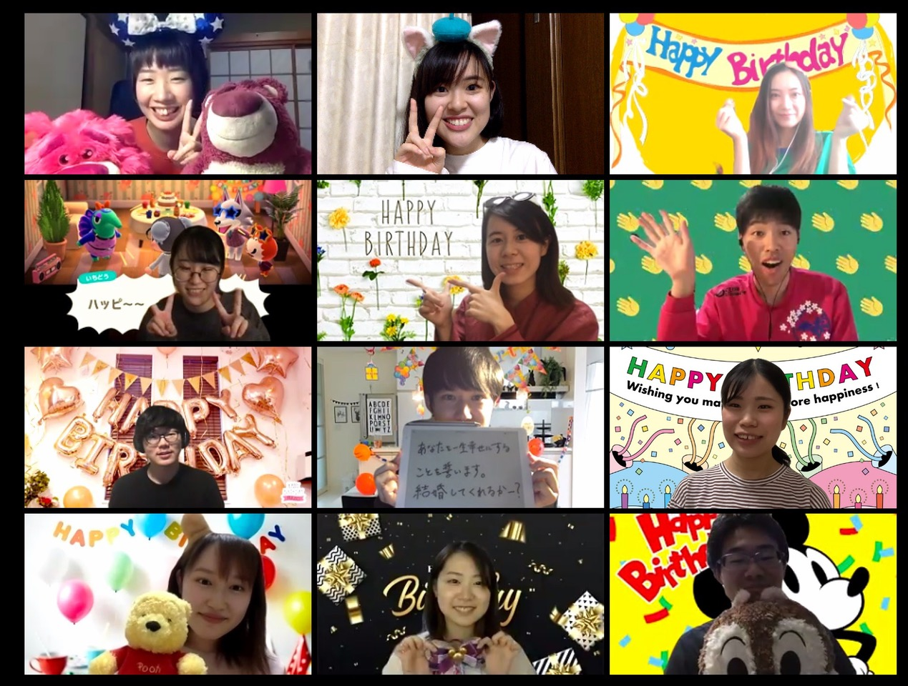

インテリアデザインスタジオ
Interior Design Studio
指導教員 藤原敬介 教授
受験生へのメッセージ
穏やかに過ごせる日常が、どれだけ幸せなことなのか、改めてそのことを切に感じています。
人生を歩む中で、自分の思いや希望だけでは、どうしようもできないことと出会すことがあります。ただし、いかなる環境や状況だとしても、ベストを尽くすことはでき、それは自己決定の上に成り立つものです。ベストを尽くすことで、約束されていることがあります。それは、悔しさは生じるけれど、後悔は残らないということです。
何かを学びたい、何かを掴みたい、皆さんの中でそのような思いが駆動し始めたとき、我々の大学そして学科は、皆さんのその思いや希望をしっかりと受け止められるよう、将来に向けて準備を怠らず研鑽を続けています。どのようなきっかけでも動機でもかまいません。皆さんの直感を信じ人生を突き進んでみて下さい。
私の周りには、思いやりに満ち、思慮深く真摯にさまざまな事柄に向き合う学生がたくさんいます。これは私の誇りであり、また私の人生の宝物です。
月並みな言葉かもしれませんが、仲間との出会いは、皆さんの人生をきっと実り多いものにしてくれることでしょう。
スタジオ紹介
あたり前の日常を、少し違う角度から見たり、視座の異なる地点から俯瞰したり、インテリアデザインスタジオでは、常にそのことを創作活動の立脚点にしながら、デザインのアウトプットを行なっています。軸としている空間のデザインやインテリアエレメントのデザインを数多く手掛けながらも、一方で、その活動領域はいつしか非常に多岐に渡るようになりました。日々使える機能拡張型の防災グッズ、複合的視点から紐解くコンビニエンスストアの商品とパッケージ、風景から導き出されるストリートファニチャーのシステムデザイン、新たな機能性を内包した一枚の風呂敷、何気ない風景を発見の場に変化させる街歩きの手引書、などなど。我々の研究室で、デザインする上で常に心掛けていることは、観念的にならず、常に思考をフラットにするところから創作活動を起動させるということでしょう。
学生の声

M2 坂口渓
建築・空間に興味があり、この研究室を選びました。卒業制作では共同墓地のランドスケープデザインを提案し、修士の現在は日本の葬送文化についての研究をしています。空間に限らず、幅広い分野に関心を持ち知識を備えた学生が集まる研究室で、週一回のゼミでは多様な考えに触れ、とても刺激を受けています。社会でご活躍されているOBOGとのつながりが強いのも研究室の大きな魅力のひとつだと思います。
M2 高橋
健太郎
様々な分野の授業を受講した後、多角的な視点から行うものづくりの姿勢を学びたいと思い、インテリアデザインスタジオに所属しました。先生の指南のもと行う幅広い分野のプロジェクトで様々な経験を得られることや、志の高い配属メンバーと切磋琢磨し刺激をし合えることがこの研究室の良さだと感じています。また社会に出た後も、様々な業界で活動している先輩や同期と濃いつながりがあるというのもこの研究室の特徴だと思います。
M2 山口
千晴
真面目な人が多く穏やかな研究室です。私がインテリアデザイン研究室を選んだ理由は、手がけるデザイン領域の広さでした。インテリアという単語を聞くと家具や内装といったイメージが強いですが、本やパッケージの制作することもあれば、なんと去年は風呂敷の制作にもチャレンジしました。他大学や自治体、企業など学外との交流も多く、毎年異なるプロジェクトに参加する度に、新たな学びを得られることが何よりも楽しいです。
M1 川俣
祐人
インテリアデザインスタジオは他のどの研究室にも負けないような綺麗な研究室と、真面目な先輩や後輩、他の研究室にはないたくさんのプロジェクトが特徴です。特にプロジェクトは年に3、4つとあり、多忙ではありますが、授業では体験できない先輩後輩を交えたプロジェクトとプロジェクトを通した他大学との交流は自分にとって大きな経験になっています。インテリアデザインという名前なので、内装空間や家具を考えることはもちろんですが、地域に目を向けた人々の生活を支えるプロダクトや企画も提案しています。
M1 北村
唯
インテ研はほかの研究室に比べて、プロジェクトの数が多いのが特徴です。授業、自分の研究、研究室のプロジェクトを両立するのはかなり大変ですが、その分学べることもあります。制作が佳境の時期は体力勝負になりがちなのが辛いポイントかもしれません。通年同じメンバーで複数の作品を制作するので、授業でのグループワークとは違ってやれることもやるべきことも幅が広くて面白い経験ができることは保証します！
M1 丁
羽南
私の故郷は中国山西省でです。旅行と友達を作ることが大好きです。以前、日本へ旅行に来た際、その文化の魅力を深く感じ、さらに日本のデザインに魅了され、ついに日本に留学することを決意しました。「椅子は機能だけでなく、もう一つの風景を創る」これはデザインに関する私の一番好きな言葉です。今、私はデザイナーになることを夢見ています。研究室の皆さんの真剣な姿に心を打たれ、このような仲間に溶け込み、お互いに切磋琢磨したいと考えています。皆さんとの楽しい雰囲気は私にとってかけがえのない時間です。
B4 越智
勇斗
研究室では主に週1のゼミでプロジェクトや各自の卒業制作のミーティングを行っています。私は、漠然とデザインに興味があって入学したため、当初はやりたいことを決めていたわけではありませんでした。その中で授業でいろいろな分野に触れていくうちに空間に興味を持つようになり、また藤原先生の授業が楽しく、もっと研究室で学んでみたいと考え、研究室を選びました。様々なスキルを持った先輩が多く、いろいろなことを吸収しながら勉強しています。
B4 川合
永里子
インテ研は縦のつながりがとても深い研究室です。わからないことや相談事などを気軽に先輩に聞くことができます。その先輩も過去に当時の上級生にお世話になり、同じように後輩の手助けがしたいと話していました。そのような方々と一緒に研究活動をすることができ、とても嬉しく思っています。穏やかで明るいながらも、熱意を持って指導してくれる先生と、協力してお互いを磨けるような学生が集まった研究室です。
B4 黒澤
真帆
インテ研はプロジェクトが多いのが最大の特徴だと思います！他の研究室ではプロジェクトがあまりないところが多いですが、インテ研では色々な活動ができるのが魅力だなと感じます。準備などで追われることはありますが、、、笑、先輩方の意見を多く聞けるのでとても勉強になります！そして優しい方ばかりなので助けられっぱなしです、、、私たちB4も仲が良いので、来年以降もきっとあたたかく楽しい研究室になるのではないかなと思います！
B4 冨田
桃香
今は研究室には集まれませんが、週に一回オンラインでのミーティングをしています。全体でのプロジェクトや個人研究などの進捗をミーティングで共有するので、マイペースすぎる私には適度にスケジュールを監視してくれる存在で助かっています。オンラインも楽しいけれど、早くオフラインで全体での活動ができればいいなと楽しみにしています。
B4 古屋
里紗
研究室を決める上で、＂何をやるか＂と同じくらい＂誰とやるか＂が大切だと考えています。先生や先輩方の、気さくでありながらやるときはとことん熱くなる姿、人のためを想い行動できる姿…。そのような姿を見ているうちに、自然とこの研究室に入りたいと思うようになりました。ずっと憧れていたインテリアデザイン研究室。自分が今、その一員として活動できていることが光栄であり、多忙でありながら充実した日々を送っています。
B4 森
茉莉亜
縦横どちらのつながりも強い研究室だと思います。特に先生や先輩方は知識の幅が広いので、アイデアに詰まったり悩んだ時、とても頼りになる存在です。常に複数のプロジェクトが進行している分忙しさはありますが、プロジェクトを通して自然とアイデアをまとめる力や表現する力が身につくので、充実した学生生活が送れると思います。コロナの影響で今期のゼミは全てオンラインになりましたが、進行も予め決めてくださり、密度の濃い内容でした。
就職先
- パナソニック株式会社
- コクヨ株式会社
- 株式会社アシックス
- ミサワホーム株式会社
- 株式会社丹青社
- 株式会社乃村工藝社
- 株式会社サイバーエージェント